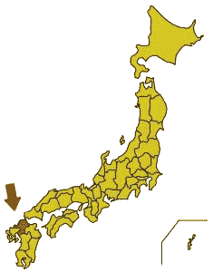

후쿠오카 소개
후쿠오카는 일본열도의 남서쪽에 위치하고 있으며, 그 온난한 기후와 아름다운 경관,그리고 편리한 교통으로 일본 국내외로부터의 여행자를 매료시키고 있습니다.
1997년, 1999년, 그리고 2000년의 세 번에 걸쳐서 아시아위크지에 「아시아 최고의 도시」로써 뽑혔습니다.
또한 2006년에는 뉴스위크지에 「세계에서 가장 뜨거운 10도시」로, 2008년에는 모노클지에 「세계에서 가장 살기 편한 도시」 제14위, 「쇼핑 부문」 제1위에 뽑혔습니다.

후쿠오카현은 일본열도의 중앙에 위치하는 혼슈에서 남쪽인 규슈라는 큰 섬에 있습니다.
중국 대륙이나 한국에 가까우며, 일본과 아시아 국가들, 또 기타 국가들을 잇는 게이트로써 중요한 역할을 하고 있습니다.
후쿠오카시는 후쿠오카현의 현청 소재지이며, 인구 약 130만명의 도시입니다.
동해에 접하고 있으며 지진이나 태풍과 같은 자연재해도 적고, 여름은 온난합니다. 허물없고 친해지기 쉬운 사람들이 많은 곳입니다.
후쿠오카의 일품요리(1인당 레스토랑 수가 일본에서 가장 많다!)와 따뜻한 후쿠오카 사람들이 있으면 후쿠오카에서의 생활은 틀림없이 즐거워질 것입니다.
교통면도 대단히 편리해서 시의 중심부로부터 국제공항까지 지하철로 약 10분, 가장 가까운 비치까지는 중심부로부터 버스나 자동차로 10분인 거리에 있습니다.
일본 특유의 신칸센을 타면 단시간에 일본 곳곳의 도시로 이동할 수 있으며, 비행기를 이용하면 1시간반만에 도쿄에 도착합니다.
출처:Map from public domain maps at http://aoki2.si.gunma-u.ac.jp/map/map.html